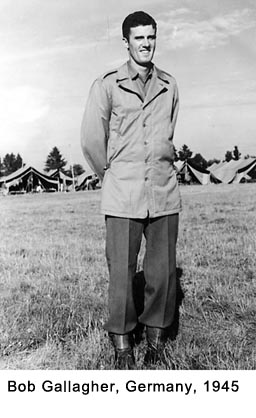

|
Table of Contents < - - - return Chapter 1 < - - - next
World War II Story by Robert F. Gallagher Synopsis and About the Author > > > Listen to Bob Gallagher Introduce his Story (mp3 file recorded September 2006) This story takes you into the daily lives of an average GI during World War II. It begins shortly before America's entrance into the war when the Japanese attacked Pearl Harbor on December 7, 1941. The author tells about his life on the South side of Chicago living in the shadow of the steel mills. He and his friends are enjoying their senior year in high school as the hard times of the Great Depression are coming to a close. America's entrance in the war changes everything. After the disappointment of being rejected while trying to volunteer for the Air Force, the author is finally drafted into service. The story takes you through the induction center, the trip cross-country by train and finally his assignment to an antiaircraft battalion in a Southern California camp. Assigned to a 40mm gun crew, he is exposed to some high-ranking noncommissioned officers for training. He describes them as "having the moral fiber of snakes." An eccentric captain adds much to the color throughout the story. The rigorous training includes several extended stays in the inhospitable Mojave Desert for gunnery practice. Following training, he is shipped across the country to an embarkation camp near New York City. Crammed aboard a converted luxury liner headed for Europe, the ship encounters a major storm on the Atlantic Ocean that lasts for three days. Landing in Scotland, he is shipped to a camp in Southwest England that leaves a lot to be desired. His outfit loads aboard an LST (Landing Ship Tank) crossing the English Channel and landing on the beach in Le Havre France. From there they join General Patton's Third Army that is battling the Germans who are being pushed back through Northern France, Luxembourg and finally Germany. When the war in Europe is over he is shipped to Antwerp, Belgium where his battalion is made into an MP unit with its share of excitement. His concern for the possibility of being shipped to the Pacific Theatre is nullified when America drops the atomic bombs forcing the Japanese to surrender and the war ends. The story describes the highs and lows the author experiences while coping with Army regimentation. He tells about his feelings toward the officers and noncoms that direct every move that he makes. It is a story about the human qualities of a GI at the bottom of the chain of command, along with his buddies, who are civilians at heart, and their struggle with the inefficiencies, inequities, frustrations, and downright miserable living conditions that military life can generate during wartime. The personalities and quirks of each of the author's fellow crewmembers with whom he lived are described in detail. Their actions and reactions to army life becomes more interesting to the reader because most of the crew can be identified through more than 180 photographs in the book, most of them taken by the author at key sites. Suspense, humor, compassion, excitement, and disappointment are all woven into the story. The final chapter deals with life immediately following the war with the problems of adjusting back into civilian life. It tells about how some of the author's buddies did not fare too well and returned from combat with permanent disabilities. _________________________ About the Author Robert F. Gallagher was born in Chicago in 1924. He entered military service in June 1943 at the age of eighteen and was discharged in March 1946. His story is garnered from numerous photos he took during the war and from detailed notes he made shortly after it. Several reunions of his battalion in the early 1950s along with later contact with men in his outfit furnished additional information. Following the war, he received his college education at the University of Illinois with the help of the government-sponsored plan known as the "GI Bill of Rights." Soon after graduation, he married Lois Brumleve and they have been together for 53 years. He spent his working years as a professional engineer (PE) primarily in designing and supervising the construction of infrastructure projects. As part of his duties, he frequently prepared a wide range of engineering reports for major construction projects. That training was of great help to him in compiling this book. When he retired in 1990, he was partner and executive vice president of a mid-size civil engineering company. He is the father of five married children and the grandfather of ten. He has lived in the same home in Flossmoor, Illinois, for 38 years. Bob Gallagher Bob Gallagher visits Landau, Germany on vacation in 2003.
Chapter 1 < - - - next Table of Contents < - - - return
Footnotes and Source of Photographs. Copyright, Robert F. Gallagher, 1999 - 2005, all rights reserved on all images and content. Contact Bob Gallagher at bob@gallagher.com regarding use of any content from this web site.
|